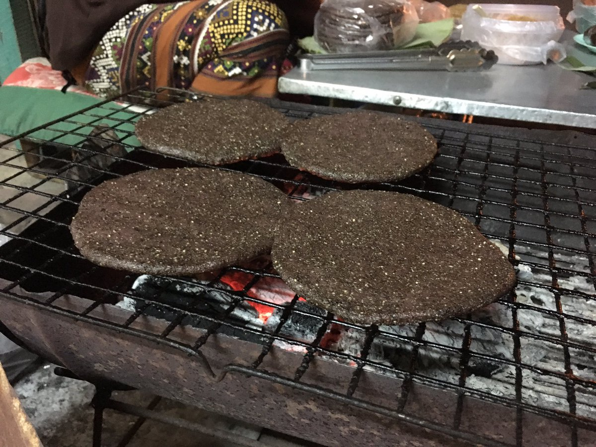
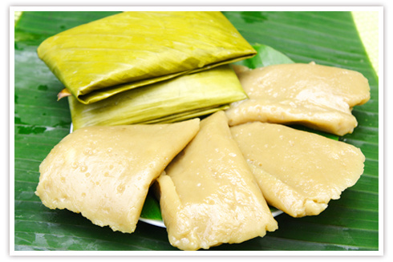
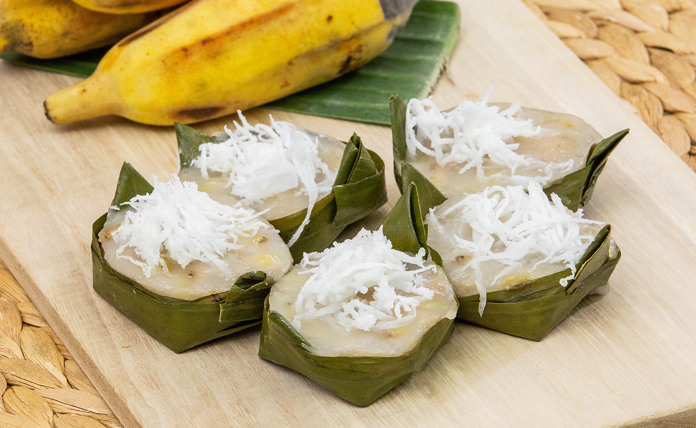
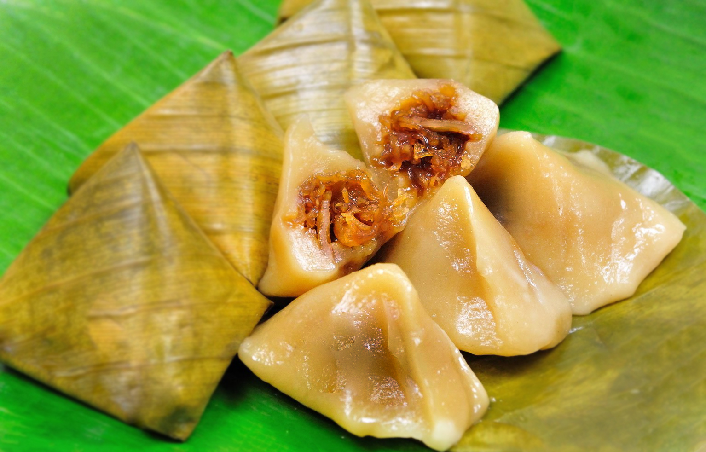
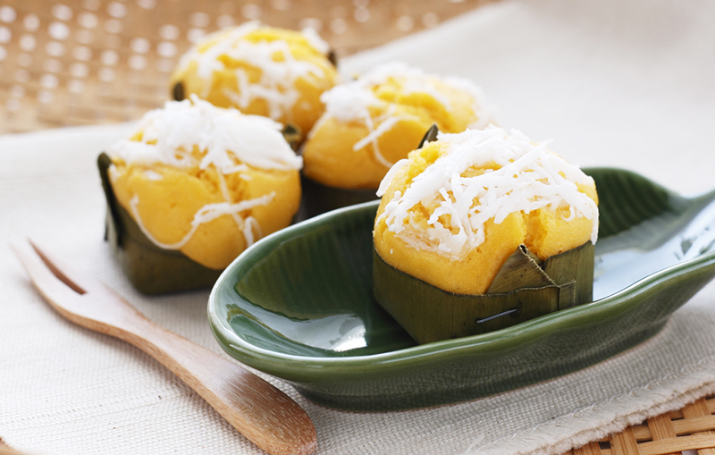
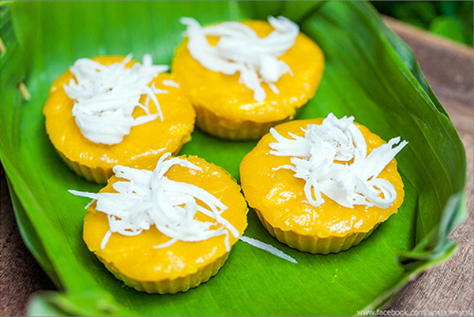
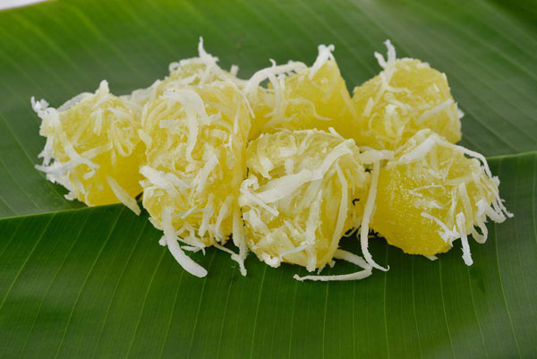
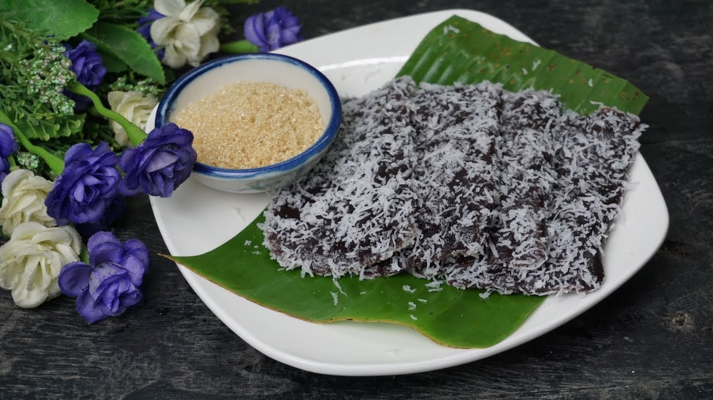
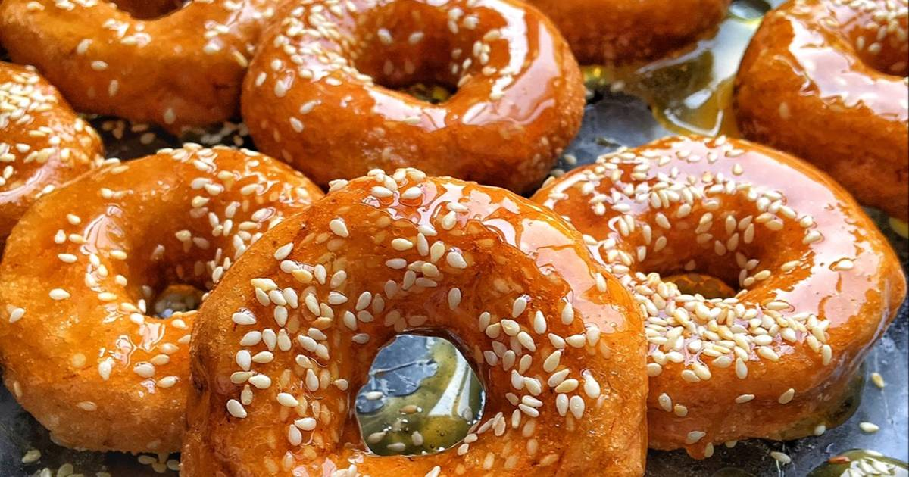
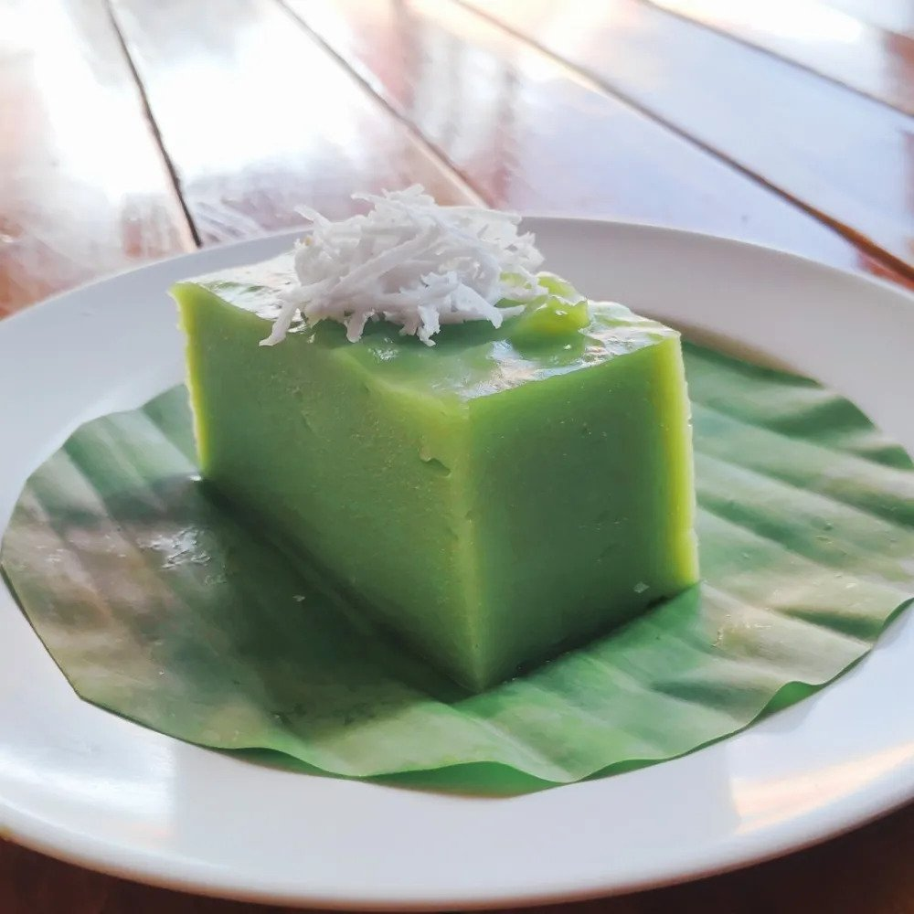

1.) ขนมงาดำอ้อย
ส่วนผสม
- งาขี้ม้อน 1 ถ้วย
- น้ำอ้อย 1 ถ้วย
วิธีทำ
- คั่วงาขี้ม้อน ใช้ไฟอ่อนๆ คั่วจนมีกลิ่นหอม
- ทิ้งไว้ให้เย็น โขลกงาขี้ม้อนให้ละเอียด
- ใส่น้ำอ้อย โขลกรวมกันให้ละเอียด
- ใส่น้ำเปล่า 1 ช้อนโต๊ะ โขลกต่อให้เข้ากัน
- ตักใส่ภาชนะ
2.) ขนมกนน้ำอ้อย หรือเข้าหนมกนน้ำอ้อย
ส่วนผสม
- แป้งข้าวเหนียวขาว 1 กิโลกรัม
- น้ำอ้อย 1 กิโลกรัม
- มะพร้าวทึนทึก 2 ถ้วย
- น้ำใบเตย 1 ถ้วย
- น้ำเปล่า 2 ถ้วย
วิธีทำ
- ผสมน้ำ น้ำกะทิ และน้ำใบเตย ให้เข้ากัน
- ใส่มะพร้าวทึนทึกขูด คนให้เข้ากัน
- ใส่แป้งข้าวเหนียว คนให้แป้งละลาย
- ใส่น้ำอ้อย คนให้เข้ากัน
- นำส่วนผสมไปตั้งไฟ ให้ใช้ไฟอ่อน กวนจนแป้งสุกและเหนียว
- ทิ้งไว้ให้เย็น นำมาห่อใบตองเป็นรูปสี่เหลี่ยม
- นึ่งไฟกลาง ประมาณ 30 นาที
3.) ขนมกล้วย หรือเข้าหนมกล้วย
ส่วนผสม
- กล้วยน้ำว้าสุก500กรัม
- น้ำตาลทราย 500 กรัม
- แป้งข้าวเจ้า 300 กรัม
- แป้งมัน 100 กรัม
- มะพร้าว 1 ถ้วย
- กะทิ 3 ถ้วย
- เกลือป่น 1 ช้อนชา
วิธีทำ
- แกะเปลือกกล้วยน้ำว้า ใส่ภาชนะ ใส่แป้งข้าวเจ้า
- ใส่น้ำกะทิ คนให้เข้ากัน
- นวดส่วนผสมทั้งหมดให้เข้ากันและขยำกล้วยให้เป็นชิ้นเล็ก ๆ
- ใส่น้ำตาลทราย แล้วนวดให้เข้ากันจนน้ำตาลละลาย
- ฉีกใบตองกว้าง 6 นิ้ว ทำเป็นกรวย แล้วใช้ไม้กลัด กลัดใบตอง
- ตักส่วนผสมใส่ลงในกรวยให้เต็ม
- วางกรวยขนมในรูของลังถึง
- โรยมะพร้าวขูด นึ่งไฟกลาง ประมาณ 20 นาที
4.) ขนมจ๊อกหรือขนมเทียน
ส่วนผสม
- แป้งข้าวเหนียวดำ 300 กรัม
- น้ำตาลปี๊บ 1 ถ้วย
- เกลือป่น 1 ช้อนโต๊ะ
- เกลือป่น 1 ช้อนชา
- น้ำมันพืช 2 ช้อนโต๊ะ
วิธีทำ
- ทำไส้ขนม นำมะพร้าวขูดลงผัดในกระทะ ใช้ไฟปานกลาง ผัดพอหอม ใส่เกลือ 1 ช้อนโต๊ะ ผัดให้เข้ากัน
- ผัดไส้มะพร้าวจนเหนียวดีแล้ว พักไว้
- ทำแป้งขนม นำแป้งนวดผสมกับน้ำ และเกลือป่น 1 ช้อนชา ให้เข้ากันจนเป็นก้อน
- ฉีกใบตองกว้างประมาณ 10 ซม. นำด้านที่ห่อมาทาน้ำมันให้ทั่ว
- นำแป้งที่นวดมาทำเป็นแผ่นกลม ใส่ไส้มะพร้าวตรงกลาง แล้วห่อแป้งให้มิดไส้ แล้วคลึงเป็นก้อนกลม
- ทำใบตองเป็นรูปทรงกรวย ใส่ขนมลงในใบตอง พับทบล่าง ซ้าย ขวา นำด้านที่แหลมสอดพับ แล้วห่อจะได้ขนมทรงสามเหลี่ยม
- นำไปนึ่งด้วยไฟแรงประมาณ 20 นาที
5.) ขนมตาล หรือเข้าหนมบ่าตาล
ส่วนผสม
- ตาลสุก 400 กรัม
- แป้งข้าวเจ้า 600 กรัม
- น้ำตาลทราย 500 กรัม
- กะทิ 2 ถ้วย
- เกลือป่น 1/2 ช้อนชา
วิธีทำ
- นำผลตาลสุกงอม ปอกเปลือกแช่น้ำ ยีลูกในน้ำที่แช่ นำเนื้อตาล ใส่ในถุงผ้าแขวนไว้จนน้ำออกหมด เหลือแต่เนื้อตาล และนำมาผสมกับแป้งข้าวเจ้า นวดให้เข้ากัน ใส่แป้ง
- ใส่น้ำกะทิ นวดให้เป็นเนื้อเดียวกัน นวดแป้ง
- ใส่น้ำตาลทราย นวดต่อจนน้ำตาลละลาย หมักไว้ 1 ชั่วโมง ใส่น้ำตาลทราย
- เตรียมกระทงใบตอง ตัดเป็นรูปวงกลมเส้นผ่าศูนย์กลางยาว 4 นิ้ว เย็บสี่มุมเป็นรูปกระทง ทำกระทง
- ตักขนมใส่กระทง ตักขนมใส่กระทง
- โรยมะพร้าวขูดลงบนหน้าขนม โรยมะพร้าว
- นำไปนึ่ง ใช้เวลาประมาณ 20 นาที นึ่งขนม
6.) ขนมฟักทอง หรือเข้าหนมบ่าฟักแก้ว
ส่วนผสม
- ฟักทอง 1 กิโลกรัม
- น้ำตาลทราย 500 กรัม
- แป้งข้าวเจ้า 500 กรัม
- แป้งมัน 200 กรัม
- มะพร้าวมะพร้าวขูด 1 ถ้วย
- เกลือป่น 1 ช้อนชา
- กะทิ 2 ถ้วย
วิธีทำ
- นึ่งฟักทองให้สุก นำมานวดให้เข้ากันกับแป้งข้าวเจ้า แป้งมัน และกะทิ
- ใส่น้ำตาล และเกลือ
- นวดส่วนผสมทั้งหมดให้เป็นเนื้อเดียวกัน พักไว้
- เตรียมกระทงใบตอง ตัดเป็นรูปวงกลมเส้นผ่าศูนย์กลางยาว 4 นิ้ว เย็บสี่มุมเป็นรูปกระทง ตักขนมใส่ในใบตอง
- โรยมะพร้าวขูดลงบนหน้าขนม
- นึ่งไฟกลาง ใช้เวลาประมาณ 15-20 นาที
7.) ขนมมันสำปะหลัง หรือ เข้าหนมมันต้าง
ส่วนผสม
- มันสำปะหลังมันสำปะหลังโม่ 500 กรัม
- น้ำตาลทราย 400 กรัม
- มะพร้าวมะพร้าวขูด 1 ถ้วย
- เกลือป่น 1/2 ช้อนชา
- น้ำเปล่า 1 ถ้วย
วิธีทำ
- มันสำปะหลังโม่ เลือกเอากากที่มีชิ้นใหญ่ออก
- ใส่น้ำตาล เกลือ และน้ำเปล่า คลุกให้เข้ากัน
- นวดส่วนผสมจนน้ำตาลละลาย
- เทขนมใส่ลงในถาด แต่งให้หน้าขนมเรียบ
- วางในลังถึง นึ่งไฟกลาง ประมาณ 45 นาที
- นึ่งสุกแล้วทิ้งไว้ให้เย็น ใช้มีดตัดขนมเป็นรูปสี่เหลี่ยม
- คลุกกับมะพร้าวขูด
8.) เข้าหนมเปี่ยง หรือเข้าเปี่ยง
ส่วนผสม
- แป้งข้าวเหนียวดำ 3 ถ้วย
- แป้งข้าวเหนียวขาว 1 ถ้วย
- น้ำตาลทราย 2 ช้อนโต๊ะ
- มะพร้าวมะพร้าวขูด 1 ถ้วย
- เกลือป่น 1 ช้อนชา
วิธีทำ
- ผสมแป้งข้าวเหนียวดำและขาว ใส่น้ำ นวดให้เข้ากัน
- ฉีกใบตองขนาด 6 นิ้ว ทาน้ำมันบนใบตองให้ทั่ว
- วางแป้งลงบนใบตอง กดให้แบนและยาว
- พับใบตองซ้ายขวา พับหัวท้าย เป็นรูปสี่เหลี่ยม
- ใส่ขนมลงในลังถึงนึ่งประมาณ 20 นาที
- นำขนมไปนึ่งให้สุก แกะใบตองออก นำมาคลุกกับมะพร้าวขูด โรยด้วยน้ำตาลทราย
9.) ขนมวง
ส่วนผสม
- แป้งข้าวเหนียว 1 กิโลกรัม
- กล้วยน้ำว้าสุก 5 ลูก
- ไข่ไก่ 3 ฟอง
- น้ำอ้อยป่น 1 ถ้วย
วิธีทำ
- ผสมแป้งข้าวเหนียวและกล้วยน้ำว้าสุก นวดให้เข้ากัน
- ใส่ไข่ไก่ นวดให้เข้ากัน
- เติมน้ำทีละน้อย นวดไปเรื่อย ๆ
- นวดจนส่วนผสมเข้ากัน และติดกันเป็นก้อน
- หยิบแป้งมาคลึงให้เป็นเส้นยาว แล้วนำปลายมาชนกันเป็นวงกลม
- ตั้งน้ำมันให้ร้อน นำแป้งที่เตรียมไว้ลงทอด
- พอขนมเหลืองทั่ว ตักขึ้นใส่ตะแกรงพักไว้
- เคี่ยวน้ำอ้อยจนเหนียวได้ที่ หยอดลงบนหน้าขนมวง
10.) ขนมศิลาอ่อนหรือขนมถาด
ส่วนผสม
- แป้งข้าวเจ้า 1 กิโลกรัม
- กะทิ 2 ถ้วย
- น้ำตาลทราย 800 กรัม
- เกลือป่น 1/2 ช้อนชา
- น้ำใบเตย 1 ถ้วย
วิธีทำ
- ผสมแป้งข้าวเจ้า กะทิ และ เกลือ นวดให้เข้ากัน
- ใส่น้ำใบเตย และน้ำเปล่า ประมาณ 2 ถ้วย นวดให้เข้ากัน
- ใส่น้ำตาลทราย คนให้น้ำตาลทรายละลาย
- เทส่วนผสมลงในกระทะทองเหลือง นำไปตั้งไฟอ่อนๆ
- กวนขนมตลอดเวลา จนกระทั่งแป้งสุก และข้นเหนียว ปิดไฟ
- เทขนมลงในถาด ทิ้งไว้ให้เย็น ตัดขนมเป็นรูปสี่เหลี่ยมข้าวหลามตัด โรยด้วยถั่วเขียวคั่ว